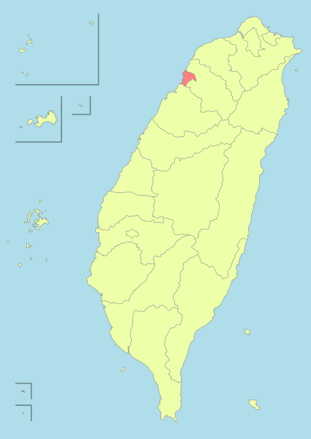

Hsinchu is my hometown.
Located in the northern part of Taiwan's urban area, with a total area of 104.1526 square kilometers, the west Taiwan Strait, south of Miaoli County, north, northeast and Hsinchu County.
Climate:Hsinchu City, rainy all year round, but more vulnerable to water shortages in summer and winter. In addition to the winter monsoon raging winter, the cold caused by the cold, Hsinchu City, the annual climate is quite calm and comfortable.
Hsin-chu Science-based Industrial Park:Taiwan's first science park, the park manufacturers to operate electronic foundry services, "Taiwan's Silicon Valley," said.
Attractions
Hsinchu Station:Taiwan Railway Administration, the main line, the railway station in the Bay Line, six lines also take this station as a rebate.The architectural style combines Baroque and German Gothic style.Taiwan's oldest active duty station house, is a national monument.

Big City:A shopping mall located in the eastern district of Hsinchu.Its shopping malls total floor area of 102,376 pyeong, the business area of 69000 pyeong.
Night at City Moat and the East Gate:The moat is 600 meters long and 56 meters wide. Coastal trees, plants and two small ladder theater provide public outdoor performances, Hsinchu citizens holiday leisure a good place.The first stone brick city in northern Taiwan has a history of more than 100 years and is classified as a second-level historic site.
Hsinchu City God Temple:Listed as a second-level historic site, the temple was the largest in Taiwan at the time, and the nearby market food stalls gathered together were one of the characteristics of Hsinchu.
Local specialties
Origin of Hsinchu names:Hsinchu, formerly known as "Bamboo Cuttings," came from the place of residence of the Dowas, a former Dowas tribe in the Pingpu district.
Hsinchu rice noodles:As the strong winds of Hsinchu years, the unique climate is very suitable for the manufacture of rice noodles, and thus gradually developed into a local specialty.

National Tsing Hua University:A research university, adjacent to National Chiao Tung University and Hsinchu Science Park, has 9 colleges, 17 departments and 22 independent research institutes. The school's symbolic plum and Bauhinia, mascot for the giant panda.